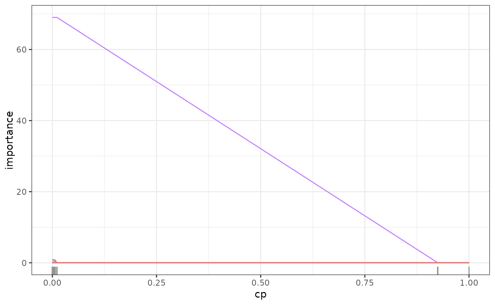

Spectral Deconfounded Tree
SDTree.RdEstimates a regression tree using spectral deconfounding. # TODO: add more details
Usage
SDTree(
formula = NULL,
data = NULL,
x = NULL,
y = NULL,
max_leaves = NULL,
cp = 0.01,
min_sample = 5,
mtry = NULL,
fast = TRUE,
Q_type = "trim",
trim_quantile = 0.5,
q_hat = 0,
Q = NULL,
A = NULL,
gamma = 0.5,
gpu = FALSE,
mem_size = 1e+07,
max_candidates = 100
)Arguments
- formula
Object of class
formulaor describing the model to fit of the formy ~ x1 + x2 + ...whereyis a numeric response andx1, x2, ...are vectors of covariates. Interactions are not supported.- data
Training data of class
data.framecontaining the variables in the model.- x
Predictor data, alternative to
formulaanddata.- y
Response vector, alternative to
formulaanddata.- max_leaves
Maximum number of leaves for the grown tree.
- cp
Complexity parameter, minimum loss decrease to split a node. A split is only performed if the loss decrease is larger than
cp * initial_loss, whereinitial_lossis the loss of the initial estimate using only a stump.- min_sample
Minimum number of observations per leaf. A split is only performed if both resulting leaves have at least
min_sampleobservations.- mtry
Number of randomly selected covariates to consider for a split, if
NULLall covariates are available for each split.- fast
If
TRUE, only the optimal splitts in the new leaves are evaluated and the previously optimal splitts and their potential loss-decrease are reused. IfFALSEall possible splitts in all the leaves are reevaluated after every split.- Q_type
Type of deconfounding, one of 'trim', 'pca', 'no_deconfounding'. 'trim' corresponds to the Trim transform (Ćevid et al. 2020) as implemented in the Doubly debiased lasso (Guo et al. 2022) , 'pca' to the PCA transformation(Paul et al. 2008) . See
get_Q.- trim_quantile
Quantile for Trim transform, only needed for trim and DDL_trim, see
get_Q.- q_hat
Assumed confounding dimension, only needed for pca, see
get_Q.- Q
Spectral transformation, if
NULLit is internally estimated usingget_Q.- A
Numerical Anchor of class
matrix. Seeget_W.- gamma
Strength of distributional robustness, \(\gamma \in [0, \infty]\). See
get_W.- gpu
If
TRUE, the calculations are performed on the GPU. If it is properly set up.- mem_size
Amount of split candidates that can be evaluated at once. This is a trade-off between memory and speed can be decreased if either the memory is not sufficient or the gpu is to small.
- max_candidates
Maximum number of split points that are proposed at each node for each covariate.
Value
Object of class SDTree containing
- predictions
Predictions for the training set.
- tree
The estimated tree of class
Nodefrom (Glur 2023) . The tree contains the information about all the splits and the resulting estimates.- var_names
Names of the covariates in the training data.
- var_importance
Variable importance of the covariates. see
varImp.SDTree
References
Ćevid D, Bühlmann P, Meinshausen N (2020).
“Spectral Deconfounding via Perturbed Sparse Linear Models.”
J. Mach. Learn. Res., 21(1).
ISSN 1532-4435.
Glur C (2023).
“data.tree: General Purpose Hierarchical Data Structure.”
https://CRAN.R-project.org/package=data.tree.
Guo Z, Ćevid D, Bühlmann P (2022).
“Doubly debiased lasso: High-dimensional inference under hidden confounding.”
The Annals of Statistics, 50(3).
ISSN 0090-5364, doi:10.1214/21-AOS2152
.
Paul D, Bair E, Hastie T, Tibshirani R (2008).
““Preconditioning” for feature selection and regression in high-dimensional problems.”
The Annals of Statistics, 36(4).
ISSN 0090-5364, doi:10.1214/009053607000000578
.
Examples
set.seed(42)
# simulation of confounded data
sim_data <- simulate_data_nonlinear(q = 2, p = 150, n = 100, m = 2)
X <- sim_data$X
Y <- sim_data$Y
train_data <- data.frame(X, Y)
# causal parents of y
sim_data$j
#> [1] 146 96
tree_plain_cv <- cvSDTree(Y ~ ., train_data, Q_type = "no_deconfounding")
tree_plain <- SDTree(Y ~ ., train_data, Q_type = "no_deconfounding", cp = 0)
tree_causal_cv <- cvSDTree(Y ~ ., train_data)
tree_causal <- SDTree(y = Y, x = X, cp = 0)
# check regularization path of variable importance
path <- regPath(tree_causal)
plot(path)

tree_plain <- prune(tree_plain, cp = tree_plain_cv$cp_min)
tree_causal <- prune(tree_causal, cp = tree_causal_cv$cp_min)
plot(tree_causal)
plot(tree_plain)